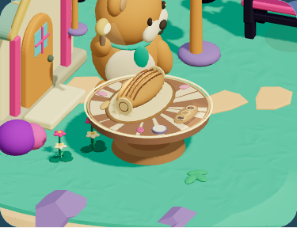
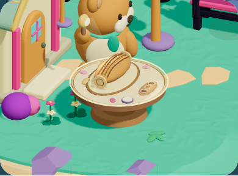
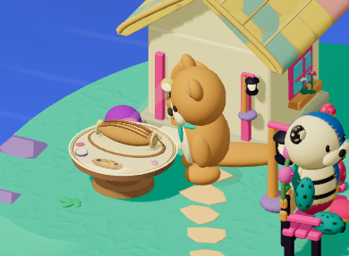
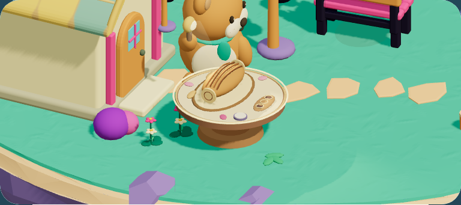
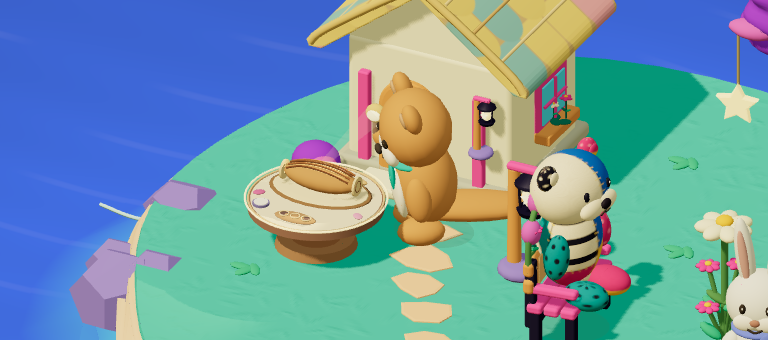

SHA256 ce0bd37690445a6bfeba0dfb55016af20a5a2a1defc90d8dea009cf68e7b6045

SHA256 95406f45c9fcc72cd41a6b7abe3416d2bbca63a878e008948ff48013f101aeec

SHA256 531d8b76966e52226d647cf1090e179b27606267831b22c31bfaf18b03c29a0f

SHA256 5efad17bb70ce6b78c5246fb8134557e88cff7cfe9e8ed625b5141fd7968810e

SHA256 97538ebc1a3d787aaf7134490333695b0b52b6919ec8d9f9770de0ad338d6531